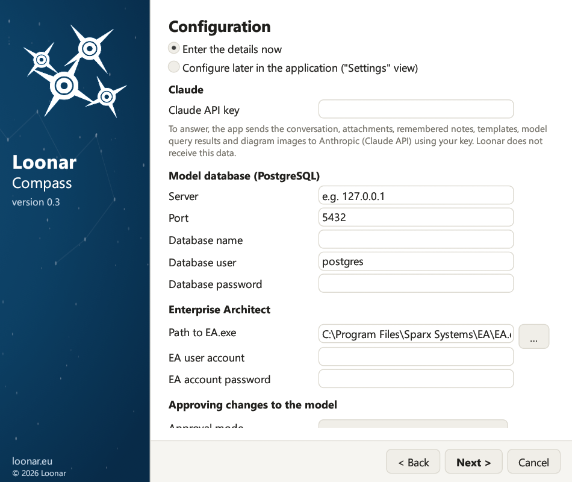
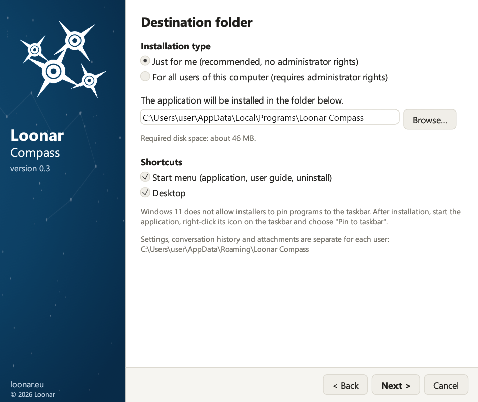

Dies ist die Dokumentation der Version 0.3. Die neueste Version ist 0.9: zur neuesten Dokumentation
Installationsanleitung
2. Voraussetzungen
- Das Modell liegt in einer PostgreSQL-Datenbank. Modelle in Dateien (.qea, .qeax, .eap, .eapx, .feap) sowie in anderen Datenbanken werden nicht unterstützt.
- Im Modell ist die Benutzersicherheit aktiviert (in Enterprise Architect: Settings → Security → Enable Security), im Modus „Require User Lock to Edit“. Die Anwendung meldet sich als bestimmter Benutzer am Modell an und sperrt beim Speichern die geänderten Objekte. Ohne Benutzersicherheit setzt sie keine Sperren; diese Konfiguration wird nicht unterstützt.
- Im Modell gibt es ein Benutzerkonto für den Assistenten (Settings → Security → Users), mit Passwort und Bearbeitungsrechten. Der Kontoname ist beliebig, zum Beispiel
claudeoderassistent, aber das Konto muss existieren. Anmeldename und Passwort geben Sie in den Einstellungen der Anwendung ein.
| Was | Details |
|---|---|
| System | Windows 10 oder Windows 11 (64 Bit) |
| Enterprise Architect | Auf demselben Computer installiert, mit gültiger Lizenz. Die Anwendung startet es im Hintergrund; währenddessen belegt es einen Lizenzplatz. |
| EA-Modell | Repository in einer PostgreSQL-Datenbank, mit aktivierter Benutzersicherheit. Benötigt werden: Server, Port, Datenbankname sowie Konto und Passwort der Datenbank. |
| Benutzerkonto des Modells | Anmeldename und Passwort eines im EA-Modell definierten Benutzers. Am besten ein eigenes Konto nur für den Assistenten, damit seine Änderungen und Sperren getrennt sichtbar sind und nicht mit Ihren kollidieren. |
| Claude-API-Schlüssel | Ein Schlüssel aus der Anthropic Console. |
| Internet | Verbindung zu api.anthropic.com über HTTPS, direkt oder über einen Proxy (Kapitel 14). |
| Confluence (optional) | Confluence Cloud oder Data Center, nur zum Veröffentlichen von Seiten durch den Assistenten: Confluence-Adresse, Token und Bereichsschlüssel (Kapitel 9). Auch ohne diese Angaben entstehen Seiten, den Code fügen Sie dann selbst ein. |
| E-Mail-Programm (optional) | Zum Melden von Fehlern und zum Anmelden für Informationen über neue Versionen: ein in Windows als Standard eingerichtetes E-Mail-Programm, zum Beispiel Outlook. |
3. Installation
Starten Sie die Datei LoonarCompass-Setup-0.3.exe. Standardmäßig installieren Sie die Anwendung nur für sich selbst, ohne Administratorrechte; Windows fragt nur dann nach Administratorrechten, wenn Sie die Installation für alle Benutzer des Computers wählen. Der Installationsassistent führt Sie mit den Schaltflächen Weiter und Zurück durch die einzelnen Schritte.

- Sprache. Zu Beginn fragt das Installationsprogramm nach der Sprache: Polnisch, Englisch, Deutsch oder Französisch. Bei einer Neuinstallation ist Englisch ausgewählt, bei einer Aktualisierung die in Ihren Einstellungen gespeicherte Sprache. Die gewählte Sprache gilt für den Installationsassistenten, die Anwendung, die Antworten des Assistenten und die Standard-Dokumentvorlagen; später ändern Sie sie in den Einstellungen (Kapitel 5).
- Begrüßung. Die Voraussetzungen und eine Liste der Dinge, die Sie vor der Installation bereithalten sollten.
- Neu in Version 0.3. Bei einer Aktualisierung: die Änderungen seit der installierten Version. Bei einer Neuinstallation: die wichtigsten Änderungen der aktuellen Version.
- Lizenzvereinbarung. Wählen Sie „Ich akzeptiere die Bedingungen der Lizenzvereinbarung“.
- Zielordner. Die Installationsart (siehe unten), der Installationsordner und die Verknüpfungen: Startmenü (Anwendung, Benutzerhandbuch, Deinstallation) und Desktop.
- Konfiguration. Sie können die Daten sofort eingeben („Ich gebe die Daten jetzt ein“) oder „Ich konfiguriere später in der Anwendung“ wählen. Die Seite enthält den Claude-API-Schlüssel (mit einem Hinweis, was an Anthropic gesendet wird), die Modelldatenbank (Server, Port, Datenbankname, Datenbankkonto, Datenbankpasswort), Enterprise Architect (Pfad zu
EA.exe, den Sie mit der Schaltfläche … in einem Dateiauswahlfenster wählen, EA-Benutzerkonto und Passwort des EA-Kontos) sowie den Freigabemodus. - Bereit zur Installation. Eine Zusammenfassung; mit Installieren beginnt die Installation. Der Fortschrittsbalken zeigt den Prozentsatz und den aktuellen Schritt.
- Installation abgeschlossen. Ist „Loonar Compass starten“ ausgewählt, öffnet sich die Anwendung nach einem Klick auf Fertigstellen.

Installationsart
Auf der Seite „Zielordner“ wählen Sie, für wen Sie die Anwendung installieren:
- „Nur für mich (empfohlen, ohne Administratorrechte)“: Die Anwendung wird in
%LOCALAPPDATA%\Programs\Loonar Compassinstalliert und steht nur Ihrem Windows-Konto zur Verfügung. - „Für alle Benutzer dieses Computers (erfordert Administratorrechte)“: Die Anwendung wird in
%ProgramFiles%\Loonar Compassinstalliert. Nach einem Klick auf Installieren fragt Windows nach Administratorrechten; werden sie nicht erteilt, wird nichts installiert. Der Ordner muss im Ordner „Programme“ liegen, in dem nur Administratoren Dateien ändern können.
Unabhängig von der Installationsart werden Einstellungen und Passwörter immer für den Benutzer gespeichert, der den Installationsassistenten gestartet hat: im Benutzerprofil (%APPDATA%\Loonar Compass) und in seiner Windows-Anmeldeinformationsverwaltung, auch wenn eine andere Person die Administratorrechte bestätigt. Bei einer Installation für alle Benutzer hat jeder Benutzer eigene Einstellungen, Unterhaltungen und Passwörter.

Aktualisierung von einer früheren Version
Loonar Compass ist der neue Name von Loonar EA Assistant: Einstellungen, Unterhaltungen, Gedächtnis, Vorlagen und Passwörter der früheren Version übernimmt die Anwendung beim ersten Start automatisch.
- Eine frühere Version, die nur für Sie installiert war, entfernt das Setup während der Installation (Programmdateien, Verknüpfungen und Eintrag in den Windows-Einstellungen); Ihre Daten bleiben erhalten.
- Ist die frühere Version für alle Benutzer installiert (zum Beispiel unter Program Files), zeigt die Seite „Bereit zur Installation“ einen Hinweis mit der Schaltfläche Alte Version entfernen (Administratorrechte). Sie können sie auch später unter Einstellungen → Apps entfernen; Ihre Einstellungen und Unterhaltungen bleiben in beiden Fällen erhalten.
- Auf der ersten Seite wählt das Setup die in Ihren Einstellungen gespeicherte Sprache vor (Einstellungen ohne gespeicherte Sprache stammen aus den rein polnischen Versionen 0.1 und 0.2 und bedeuten Polnisch), ohne Einstellungen Englisch. Prüfen Sie diese Auswahl, bevor Sie auf Weiter klicken.
- Ein Sprachwechsel im Setup übersetzt weder das Gedächtnis noch die Vorlagen. Wenn Sie diese in die neue Sprache übertragen möchten, behalten Sie im Setup die bisherige Sprache bei und ändern Sie sie nach der Installation auf Karte 4 der Einstellungen (Kapitel 5).
- Ein Datenbankpasswort, das ältere Versionen in der Einstellungsdatei gespeichert haben, wird in die Windows-Anmeldeinformationsverwaltung übertragen, und Dateien und Ordner mit polnischen Namen im Datenordner erhalten englische Namen (zum Beispiel
audit_log.jsonlundtemplates).
17. Aktualisierung und Deinstallation
Aktualisierung. Schließen Sie die Anwendung und starten Sie das Installationsprogramm der neueren Version. Der Installationsassistent zeigt die Seite „Neu in Version …“ mit den Änderungen seit der installierten Version, übernimmt die Installationsart und den Ordner der bestehenden Installation und behält Ihre Einstellungen, den Unterhaltungsverlauf, die Anhänge, das Gedächtnis, die Vorlagen und das Änderungsprotokoll. Zur Aktualisierung von einer Version vor 0.3 siehe Kapitel 3.
Schließen der Anwendung. Das Schließen des Fensters schließt auch die von der Anwendung im Hintergrund gestartete Enterprise-Architect-Sitzung, sodass die EA-Lizenz sofort freigegeben wird.
Deinstallation. Schließen Sie die Anwendung. Verwenden Sie die Verknüpfung „Loonar Compass deinstallieren“ im Startmenü oder den Eintrag „Loonar Compass“ unter Einstellungen → Apps → Installierte Apps. Bei einer Installation für alle Benutzer fragt Windows nach Administratorrechten. Das Deinstallationsprogramm entfernt die Programmdateien, die Verknüpfungen und den Systemeintrag und zeigt den Fortschritt in einem Balken an. Ihre Daten bleiben erhalten, es sei denn, Sie wählen:
- „Einstellungen, Unterhaltungen, Anhänge, Gedächtnis des Assistenten, Dokumentvorlagen und Änderungsprotokoll entfernen“: Dabei wird der gesamte Benutzerdatenordner
%APPDATA%\Loonar Compassgelöscht, - „API-Schlüssel, Passwörter und Tokens aus der Anmeldeinformationsverwaltung entfernen“: alle Geheimnisse der Anwendung, auch das Confluence-Token und das Datenbankpasswort.
Entfernt werden nur die Daten des Benutzers, der die Deinstallation gestartet hat; die Daten anderer Benutzer bleiben in deren Profilen.